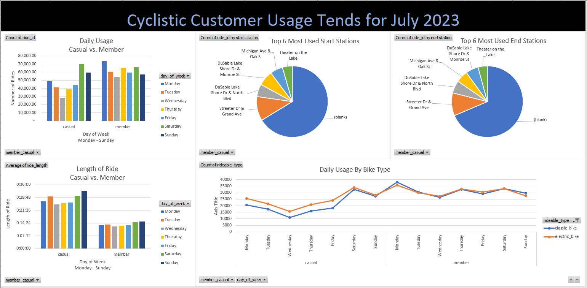
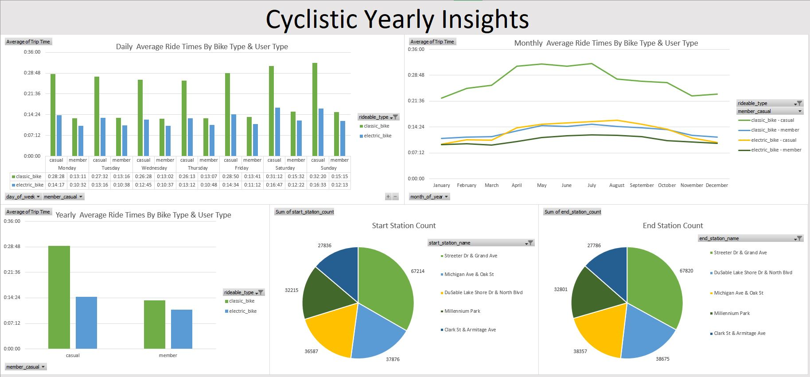
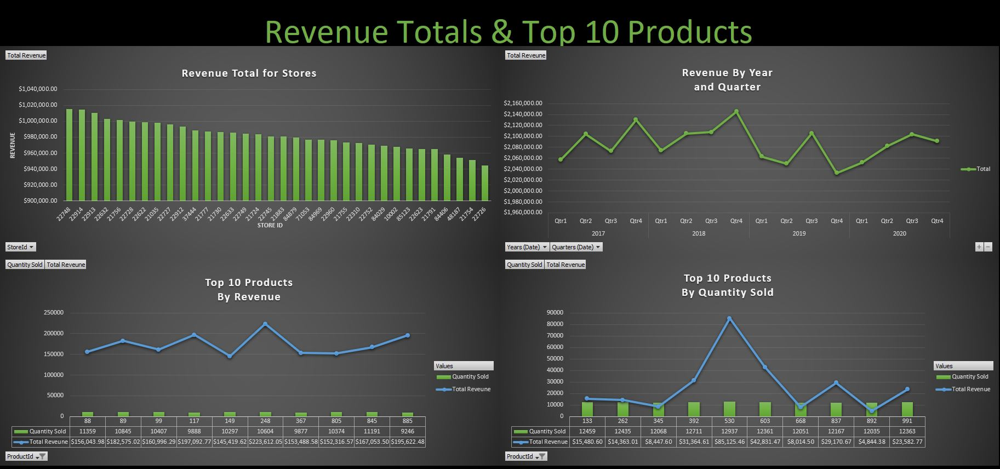
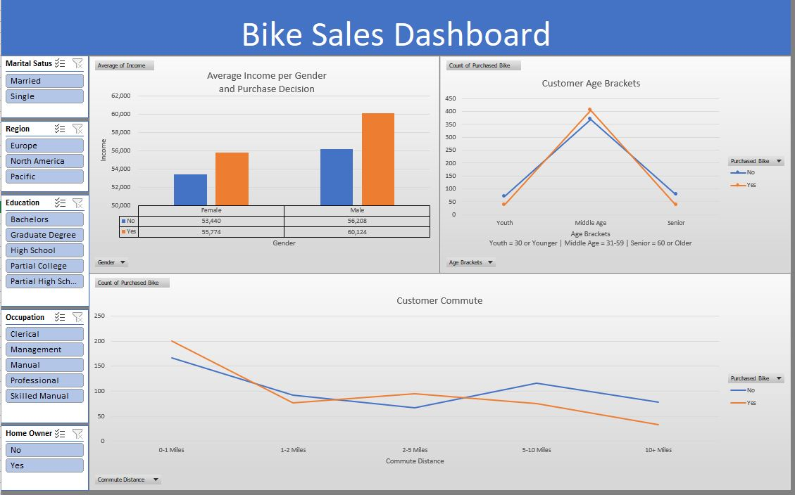
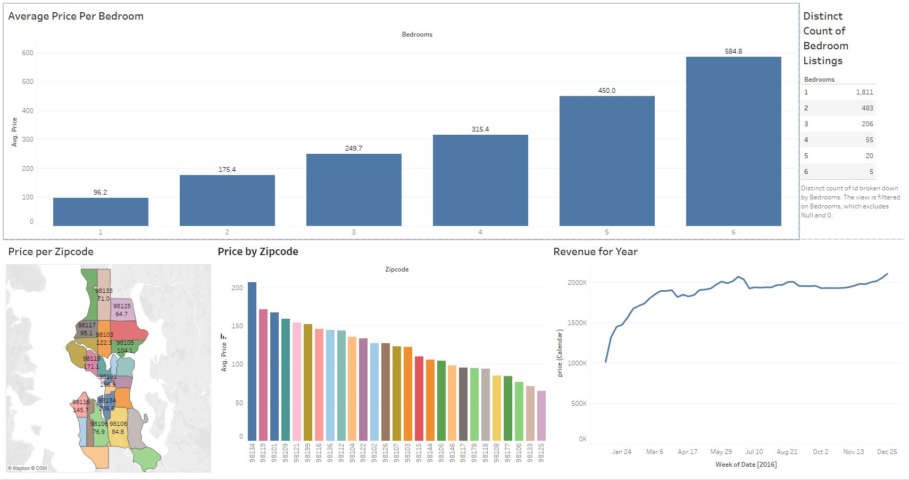

For this project I did 2 analyses for a fictional bike rental company, first a 1 month analysis in Excel & the second a 1 year analysis
using Excel & SQL Server. The 2 dashboards highlight the differences between the the way Casual users and Members use the bikes. It also
shows the top stations used.



On this project I did an analysis for a fictional company that sells replacment parts for manufacturing equipment. I used Excel for this analysis and compare the total revenue by quater for 4 years to revenue by store, revenue by store, the top 10 products by revenue, & the top 10 products sold.

In this project for a fictional internationl bike retailer, I cleaned data in Excel, created pivot tables, and crafted an interactive
dashboard for stakeholders. This dashboard shows what factors might influence a customer's decision to purchase a bike.

This project explores video game sales from 1980 till 2016 using Tableau. It vizualizes global sales, the 3 leading video game console manufacturers by game sales, and video game genres by sales.

This project explores Air BnB listings for the Seattle, Washington area in 2016. The purpose is to find out which bedroom count and location would be a great revenue generator for new listings in the time frame.
{kind=link}
{kind=link}
{kind=link}
{kind=link}
{kind=link}